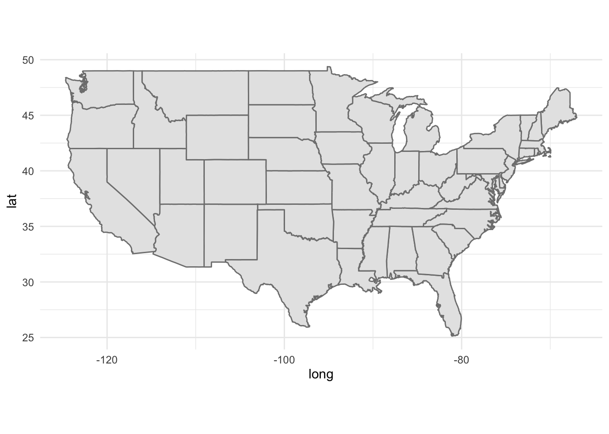
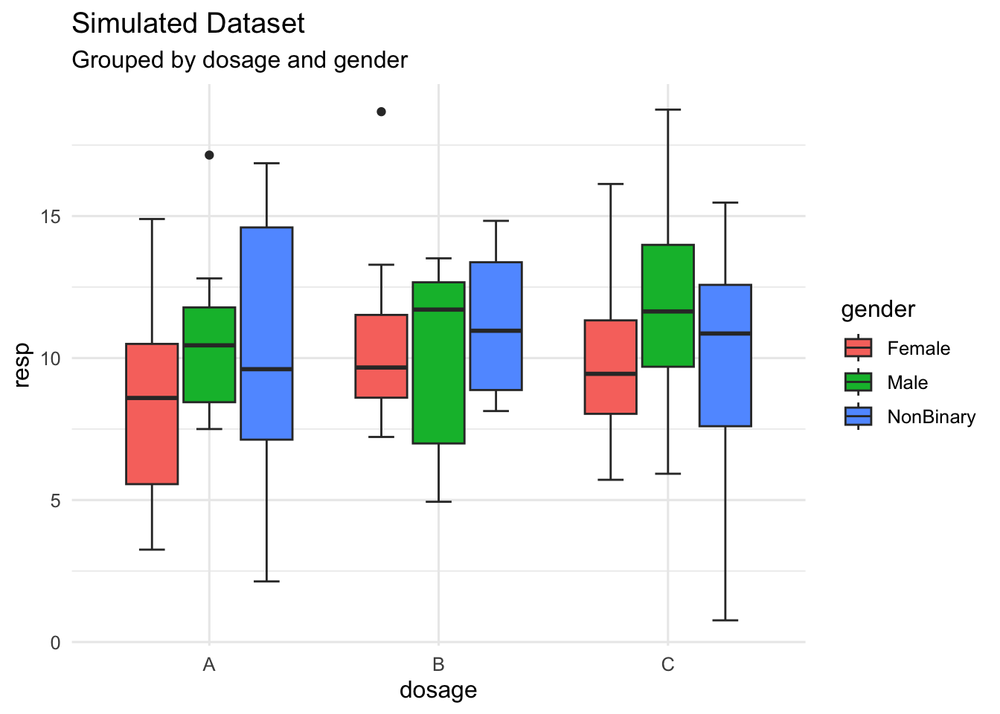
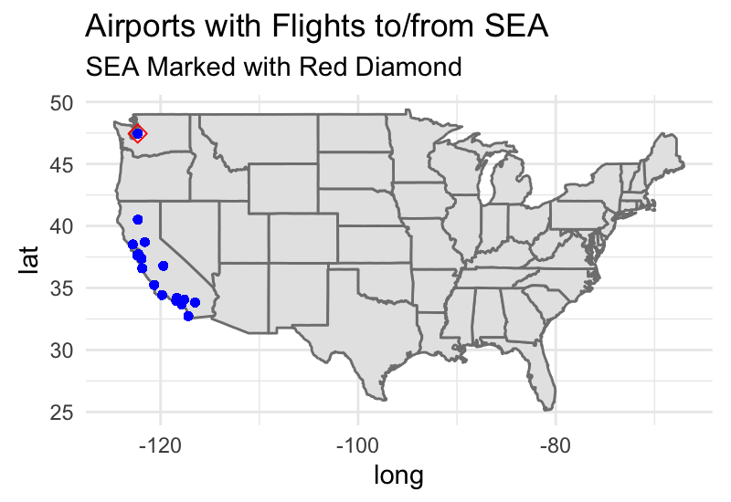

left_join(
...,
by = join_by(...)
) %>%
rename(
...
) %>%
left_join(
...
by = join_by(...)
) %>%
rename(
...
)Welcome to the first PSTAT 100 Mini-Project! Please keep in mind that mini-projects will be (intentionally) a bit open-ended. This is because most “real-world” data science projects - whether they be in industry or in academia - are also open-ended. Instead of having a set series of questions that can be answered with only one or two methods, project-type questions can often be answered in many different ways, using many different techniques.
We do expect your final product to be more akin to a report than a homework set, though we will not necessarily expect all of the formality of an academic paper (we’re saving that for the final project). Having said that, here are some things to keep in mind:
Don’t try to answer the report questions as a list. Though this report will ask you to answer a series of questions (and you should do your best to answer all of the questions asked of you!), you shouldn’t just list out the answers. Rather, write full sentences, and always justify your answers with references to plots or outputs of code.
Do NOT include code in your report outside of the appendix. This may seem counterintuitive at first glance, but this is actually a very common practice in report-writing: you should relegate all of your code to an appendix, opting to include only the results in the main body of your report. (Remember that you can always leverage the
echo = Foption in your code chunks!)It’s okay to Google (as long as you’re honest)! No matter how experienced a data scientist may be, there will inevitable be a vast array of things they don’t know how to do. As such, Google is a data scientist’s best friend! The best way to learn how to do things is to try and figure them out. (Of course, we are always happy to help during Office Hours as well.) All I ask is that, in the Works Cited/References portion of your lab, you please make an indication that you did use Google for something.
Describe and interpret ALL graphs and tables. In general, you should never simply generate a graph and/or table and “leave it alone”- all of your graphs, tables, etc. should have some sort of verbal interpretation and/or discussion in your report. For example, what does your graph tell you? How is it that your graph conveys the information that it does?
Introduction
The United States Bureau of Transportation Statistics (BTS) is a part of the Department of Transportation designed to aid in the reporting and collection of transportation-related data. In this mini-project, we will explore some of the aviation data that the BTS provides. Specifically, we will examine only flights from 2023 that routed through California (i.e. that have a California airport as either their point of origin or their final destination).
Specifically, this project takes the form of what is sometimes called a visualization project, where the main aim of the project is to better understand the data through exploration, rather than inference or modeling.
Background
As a part of this project, you will be asked with generating a handful of maps. In the cartographic1 world, objects are typically identified by a pair of points called a coordinate. Geographical coordinates consist of a latitude and longitude value, which can be thought of like x- and y-coordinates in a Cartesian coordinate system, respectively.

Data Description
The data for this project is spread across several files (which is fairly common in data science projects);
a series of 12 files containing flight informations for each of the 12 months in 2023 (these files all have the name
CA_Flights_<month>, where<month>represents the month represented in the file)a file called
Carrier_Codes.csv, which includes the full names for the various airline carriers included in the dataseta filed called
Airport_Info.csv, which contains geographical information about major US airports.
Each of the CA_flights_<month>.csv files contain the following column names (and their description):
| Variable Name | Description |
|---|---|
year |
the year of observation |
month |
the month of observation |
day_of_month |
the day of month of observation |
op_unique_carrier |
the airline carrier associated with the observation |
origin |
the airport code of the origin (i.e. point-of-departure) of the observation |
dest |
the airport code of the destination |
crs_dep_time |
the scheduled departure time |
dep_time |
the actual departure time |
dep_delay |
the amount of delay in departure; i.e. actual departure minus schedule departure (flights that departed early have a negative dep_delay value) |
crs_arr_time |
the scheduled arrival time |
arr_time |
the actual arrival time |
arr_delay |
the amount of delay in arrival; i.e. actual arrival minus schedule arrival (flights that arrived early have a negative dep_delay value) |
crs_elapsed_time |
the scheduled flight duration (in minutes) |
actual_elapsed_time |
the actual flight duration (in minutes) |
Additionally, all times are listed in the local time zone.
Note
It is up to you to determine whether or not to use the Carrier_Codes.csv file.
Project Questions
Warning
Please remember to write your descriptions in narrative form; don’t try and list the answers to these questions one by one! (Listing your answers one-by-one will result in point deductions while grading.)
Section 1: Data Cleaning and EDA
Most projects will begin with cleaning, merging, and exploring the datasets of interest. For instance, it’s a bit annoying that the data is spread across several files. Eventually, we’d like to make comparisons across time which is difficult to do with the current structure of our data.
Combine all 12 months’ worth of data into a single data frame.
You can always read each monthly file into a separate variable, and then combine them together using a function like
bind_rows(). (In the real world this is typically frowned upon since it is a little inefficient, however for the purposes of this mini-project it’ll be find if you do it this way.)Another way is to:
- Define a (vector) variable listing all of the filenames of the files you want to read in
- Use the
lapply()function to apply theread.csv()function to each of the elements in your filename vector, thereby creating a list with 12 layers (each layer corresponding to one of the monthly data files) - Use
bind_rows()to effectively “collapse” your list of data frames into a single dataframe
What are the observational units and variables in this dataset? How many of each are there?
How are missing values encoded? How can you tell?
Tip:
Remember, your final PDF should have no code chunks showing. It’s fine if you leave some of your code output displayed, so long as you describe/analyze it right after. If you find yourself not referencing a particular output of code, simply hide the output.
As a reminder, to get a code chunk to run but not display you can change your code chunk header from ```{r} to ```{r, echo = F}.
Now, our dataframe consisting of all observations does have origin and destination airports included, however the values of these variables are simply the airport abbreviations. It would be much nicer if we could translate those abbreviations into full airport names as well as latitude and longitude values. Thankfully, the airport_info.csv file does contain this information. However, it also contains information on more airports than we really need. The way we’ll pinpoint only the information we need is by utilizing a join.
Start off by importing the airport_info.csv file, and store assign this to a variable.
Now, we need to think a little bit about what information we want to include in our dataframe. Specifically, note that we have both origin and destination airports to keep track of. Hence, it makes sense to actually include six additional columns to our Part I dataframe: three indicating origin airport name, latitude, and longitude, and three indicating destination airport name, latitude, and longitude. For consistency, give these new columns the following names:
ORIGIN_ARPT_NAMElat_originlon_originDEST_ARPT_NAMElat_destlon_dest
Note
As we will see later in the course, this naming scheme is actually not typically considered to be a good one - specifically, mixing allcaps variable names with lowercase or mixed-case names is usually frowned upon. But, for now, we won’t worry about that too much.
You can, if you like, do this in two separate joins (one joining on origin airport information and another joining on destination airport information), but, if you like, you can actually do this in one command (making heavy use of the pipe operator). Here is some skeleton code you can use to accomplish the desired join (replace the ...s with your code):
You should also take this time to ensure that variables are encoded using the appropriate type (e.g. check that ordinal variables are stored as ordered factors, numerical variables are stored with the data type numeric, etc.). Also, make sure that months have descriptive names (e.g. don’t use 1 for January; instead, use Jan or January, etc.).
Section 2: Santa Barbara Airport
We’ll start off by restricting our considerations to flights routing through Santa Barbara Airport (SBA). Keep in mind that this refers to flights both originating from and arriving at SBA.
Geographic Considerations
How many airports have flights that connect with Santa Barbara? What are the names of these airports? (Include full airport names, not just airport abbreviations!)
Make a map that displays the geographic locations of these airports. Also, clearly indicate the location of SBA on your map.
Aside: Maps
Here is some code to get you started on the mapmaking portion:
library(tidyverse)
states <- map_data("state")
ggplot() +
geom_polygon(data = states,
aes(x = long, y = lat, group = group),
fill = "grey90",
colour = "grey50") +
coord_quickmap() +
theme_minimal()
Exploring Flights
It’s time to make some statistical visualizations!
Generate a line graph that visualizes the total number of monthly flights that route through SBA. Here, when we say “route through”, we mean either originate from or land in SBA. Use this graph to identify the “high” and “low” seasons for travel to and from Santa Barbara.
Now, reproduce your graphic from the above step but facet based on whether the flights are departing from or landing in SBA. Are there any differences between the peaks and troughs in the originating-from and landing-in graphs?
Are there any months in which the number of flights landing in SBA differs from the number of flights leaving SBA? You can answer this using either a graph, or by producing a table.
Now, generate a doubly-grouped side-by-side boxplot that displays the distribution of flight durations for flights departing from and arriving in SBA. That is, you should have several pairs of boxplots (one pair for each of the airports served by SBA), with each pair consisting of a distribution of SBA-bound flight durations and SBA-departing flight durations. Use this graph to describe if there are any differences in the distribution of flight durations to and from SBA. As an example of what we mean by “doubly-grouped side-by-side boxplot” (as applied to a completely fictitious dataset containing response measurements
respon three differencedosages and three differentgenders):
set.seed(123)
data.frame(
resp = rnorm(100, 10, 4),
dosage = c(rep("A", 30), rep("B", 20), rep("C", 50)),
gender = c(rep(c("Male", "Female", "NonBinary"), 33), "Female")
) %>%
ggplot(aes(x = dosage,
y = resp,
fill = gender)) +
geom_boxplot(staplewidth = 0.5) +
theme_minimal(base_size = 12) +
ggtitle(
"Simulated Dataset",
subtitle = "Grouped by dosage and gender"
)
Investigating Delays
Now that we have a decent feel for the airports and flight durations included in the dataset, let’s start to investigate the delays. Again, we’ll (for now) only consider flights that route through SBA (i.e. have SBA as either their point-of-origin or their destination).
Generate a boxplot of departure delays across airlines. For this part, use the
xlim()andylim()functions to play around with your axis limits to focus on the “box” portion of the boxplot” Comment on whether, on average, airlines had flights that departed before or after their scheduled departure times, and also comment on differences in average (median) departure delays across airlines.Now, generate a doubly-grouped boxplot that displays delay times across airlines, but color based on whether the delay is a departure delay or an arrival delay. Comment on your plot.
For flights departing from SBA, is there an association between the scheduled departure time and the length of delay? Be sure to include a plot that effectively displays any potential changes to this relationship across destination airports (hint: is color really the best aesthetic to change here?)
Section 3: Branching Out
Alright, let’s broaden our scope and stop focusing solely on flights routing through SBA.
What does the distribution of departure times look like? Are there peaks and troughs throughout the day (i.e. are there period of times with very high and/or very low departure counts)?
What does the distribution of arrival times look like? Are there peaks and troughs throughout the day (i.e. are there period of times with very high and/or very low arrival counts)? If there are peaks and troughs, do these correspond with the peaks and troughs in departure counts?
Are there months that have higher/lower average (median) departure delays? What about arrival delays? (There are several justifications you could give, including either a plot or a table. Take your pick!)
It’s also important to think critically about the scope of inference2 of our dataset. For example, the graph below (which is analogous to one of the graphs you should have made somewhere above) marks the airports served by the Seattle-Tacoma International Airport:

We happen to know, from prior knowledge, that there exists a direct flight from Seattle to Newark Airport (near New York City). How come this flight isn’t included in this dataset? In other words, will filtering solely based on arrival or departure airport give us information about all flights (regardless of origin and destimation) routing through that airport?
Acknowledgments
Data is courtesy of the Bureau of Transportation Statistics, and was accessed from https://www.transtats.bts.gov/DL_SelectFields.aspx?gnoyr_VQ=FGJ&QO_fu146_anzr=b0-gvzr. The data contained in the Airport_Info.csv file was also provided by the Bureau of Transportation Statistics, at the following location: https://geodata.bts.gov/datasets/usdot::aviation-facilities/about